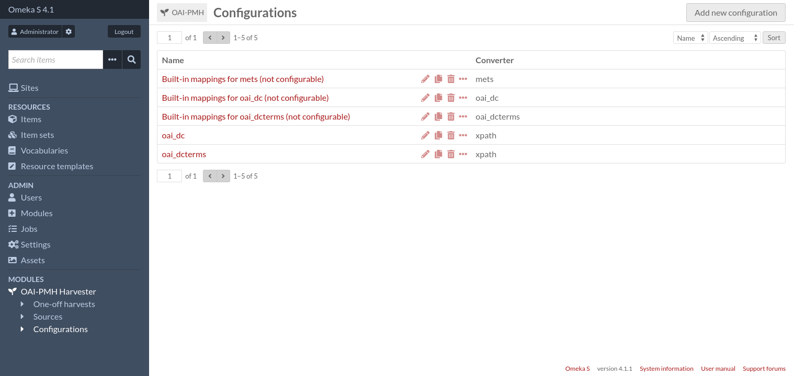
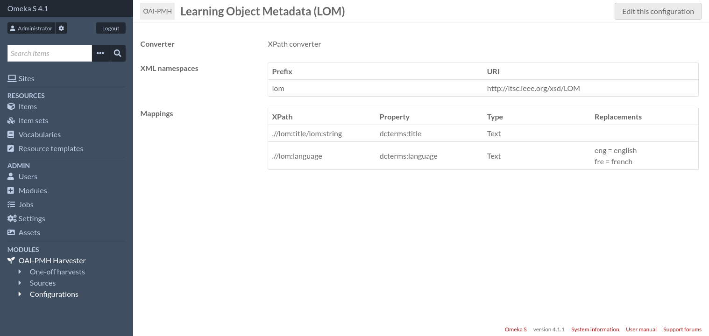

Configurations
Les configurations sont l’endroit où des paramètres variés peuvent être stockés et partagés par plusieurs sources.
Les configurations consistent en:
Un nom,
Un convertisseur, qui est le composant responsable de convertir une notice OAI-PMH en données adaptées à Omeka,
Une liste de paramètres qui dépend du convertisseur sélectionné (si le convertisseur est configurable).
Les configurations peuvent être dupliquées, ainsi les configurations existantes peuvent servir de point de départ pour des nouvelles configurations.
Par défaut il y a 3 convertisseurs non configurables qui utilisent les mêmes correspondances que les moissons ponctuelles: oai_dc, oai_dcterms et mets. Il y a aussi un convertisseur configurable, « Convertisseur XPath », qui permet aux utilisateurs de spécifier leurs propres correspondances en utilisant des expressions XPath.
D’autres modules Omeka peuvent fournir des convertisseurs additionnels.
Ajouter une nouvelle configuration
Pour créer une nouvelle configuration, rendez-vous sur la page « Configurations » (accessible depuis le menu d’administration).

Puis cliquez sur le bouton « Ajouter une nouvelle configuration ».

Saisissez un nom pour la nouvelle configuration, sélectionnez le convertisseur XPath puis cliquez sur le bouton « Ajouter ».

Ensuite vous aurez deux champs importants à remplir:
- Espaces de noms XML
Les espaces de noms utilisés par vos expressions XPath doivent être enregistrés ici. La seule exception est l’espace de noms
oaiqui est toujours enregistré.Il doit y avoir un seul espace de noms par ligne, au format:
<préfixe> = <uri>, par exempleoai_dc = http://www.openarchives.org/OAI/2.0/oai_dc/.- Correspondances
C’est ici que vous définissez comment les notices OAI seront converties en contenus Omeka
Ajouter une correspondance
Pour ajouter une nouvelle correspondance, sélectionnez « correspondance XPath » dans la liste déroulant et cliquez sur le bouton « + ». Les paramètres de correspondance apparaîtront dans une barre latérale.

Une correspondance consiste en les champs suivants:
- Expression XPath
Une expression XPath 1.0 relative qui correspond à un nœud ou une liste de nœuds (les attributs XML sont aussi des nœuds). Le nœud contexte pour cette expression sera le nœud
<oai:record>. La valeur importée dans Omeka sera le contenu textuel de ce nœud. Si plusieurs nœuds correspondent à l’expression XPath, il y aura une valeur par nœud.Par exemple, pour obtenir le titre d’une notice
oai_dc, vous pouvez écrireoai:metadata/oai_dc:dc/dc:title, ou alternativement.//dc:title.- Propriété
La propriété Omeka où sera stockée la valeur
- Type
Le type de valeur. Peut être « Texte » ou « URI ».
- Remplacements
Remplacements de texte éventuels à effectuer. Un remplacement par ligne. Chaque ligne doit être au format:
ancienne valeur = nouvelle valeur. Le remplacement est fait uniquement si la valeur correspond exactement.Par exemple:
eng = english fre = french
Une fois la correspondance faite, n’oubliez pas de cliquer sur le bouton « Définir correspondance », sinon les paramètres de la correspondance seront perdus.
Vous pouvez configurer autant de correspondances que vous voulez.


Quand vous avez terminé, cliquez sur le bouton « Enregistrer les changements ».

Depuis la page « Configurations », vous pouvez cliquer sur le nom d’une configuration pour voir les détails complets de la configuration sur une seule page.
